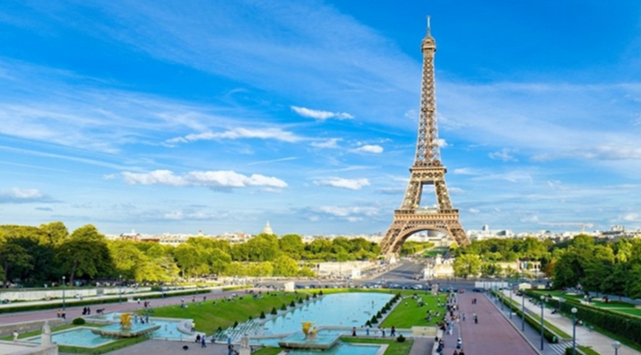

Ајфелова кула наскоро во ново руво
Една од најпознатите светски туристички атракции и симбол на француската престолнина, Ајфелова кула, наскоро би можела да добие нешто повесел изглед. Кулата која е изградена во периодот помеѓу 1887 и 1889 и била главен влез на Светската изложба во Париз 1889 година, висока е 324 метри и направена од 10.000 тони лиено железо. Од ... изградбата до денес, боена е 19 пати, за што е потребно 60 тони боја. Моментално ја краси посебно осмислена кафена нијанса, но верувале или не, некогаш Ајфеловата кула изгледала многу повесело. Сега е време повторно да се освежи бојата, а разубавувањето на една од најважните париски атракции è од октомври 2018 до крајот на 2021 година. Сè уште не го знаеме финалниот изглед, но сигурни сме дека ќе изгледа прекрасно, како и до сега.